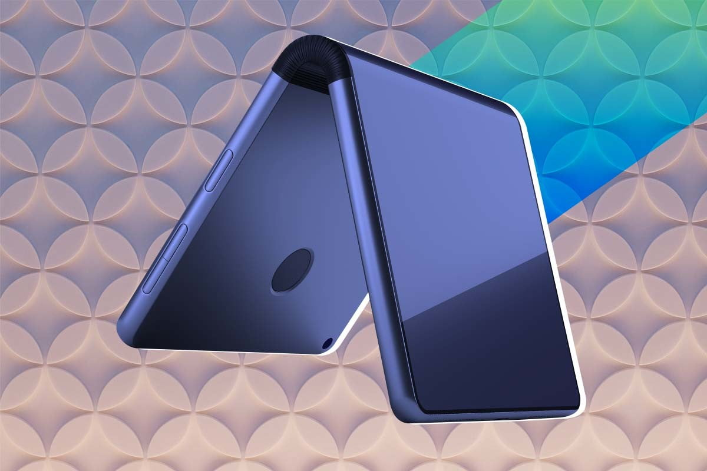

Si eres millennial, es probable que recuerdes teléfonos como el Motorola Razr. Hablamos del antiguo celular plegable lanzado en noviembre de 2004 que tenía una pequeña pantalla en la tapa y que venía en varios colores, incluso en una edición fucsia que fue utilizado por Rihanna y Paris Hilton.
En 2005, ese teléfono fue el más vendido de todo el mundo y era tan popular y distinguido que este ícono tecnológico fue incluido en las bolsas de regalo para las celebridades de los Premios de la Academia en ese año.
Con el paso del tiempo, los teléfonos plegables se dejaron de utilizar y llegaron los enormes terminales planos con una pantalla que cubría la mayor parte de la superficie, así que la oportunidad de volver a utilizar un teléfono plegable parecía cada vez más lejana. Sin embargo, al parecer estos clásicos teléfonos han vuelto junto con la placentera sensación de cerrar su tapa luego de terminar una llamada o escribir mensajes con un teclado T9.
En mayo, una administradora de redes sociales de Ámsterdam llamada Amber Giesen (26 años), organizaba una fiesta con una temática del año 2000 y necesitaba un accesorio característico para presentar. Entonces, lo que hizo fue comprar un Motorola Razr en un tono fucsia a través de eBay. Así es, dieciséis años después del lanzamiento de ese mítico teléfono.
Giesen documentó el unboxing de su “nueva” adquisición en su cuenta de TikTok y allí mostró la cámara de 2 MP y la gama limitada de juegos del celular, mientras reproducía la canción “Toxic” de Britney Spears. “Comprarlo fue muy nostálgico para mí porque vi todas las funciones que mi mamá solía tener en el suyo, como la cámara y los pequeños juegos”, dijo Giesen a Mashable.
De acuerdo con Biz Sherbert, especialista en cultura en The Digital Fairy, “estéticamente, los teléfonos plegables son mucho más interesantes que los elegantes teléfonos inteligentes de hoy”.
“[Antes] existía una mayor variación en el estilo y el diseño de los teléfonos plegables y deslizantes, desde los invencibles y utilitarios Nokia hasta los Blackberry de negocios y los Motorola Razr de un brillante color rosa. Había más personalización y estilo en los teléfonos móviles”, agregó.

Para una generación de nativos digitales, como la Z, que ha vivido toda su vida frente a las pantallas, lo analógico es más atractivo en 2021.
Un informe de Common Sense Media de 2019 reveló que el tiempo de pantalla promedio de los adolescentes es de 7 horas y 22 minutos, y eso no incluye el tiempo que pasan frente a una pantalla en la escuela o para realizar una tarea.
Es por eso que la Generación Z prefiere los teléfonos plegables, ya que, además de tener una estética distinta a la que acostumbra a ver en las tecnologías actuales, representan una forma alternativa de vida, una en la que se puede disponer de siete horas al día para realizar otras actividades. Son cautivados por esa posibilidad: más tiempo libre.
Estos jóvenes se están desconectando de la tecnología moderna y, de hecho, animan a otros a hacer lo mismo. Como dice uno usuario en TikTok: “Esta es tu señal para que obtengas un teléfono plegable para el verano y tomar un descanso de las redes sociales tóxicas”.